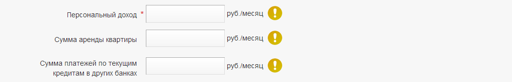

Правильных ответов: %CA%
Попробуй ответить на те вопросы, где ты ошибся, ещё раз. Не забудь внимательно читать подсказки в анкете!

Необходимо обязательно сверять ФИО со слов Заявителя. Если данные в ФИО поменялись, внесите новые данные, убедившись, что их диктует именно Заявитель.
Необходимо обязательно сверять номер мобильного со слов Заявителя. Вносите только личный контактный мобильный телефон Заявителя.
Поставьте галку, если номер Заявителя совпадает с указанным в анкете. Если мобильный изменился, внесите новый номер и галку НЕ ставьте.
Если Заявитель не помнит телефонный код города, уточните его на сайте http://www.btk-online.ru. Если у Заявителя нет стационарного телефона, поставьте галку «Нет стационарного телефона».
Если Заявитель не помнит телефонный код города, уточните его на сайте http://www.btk-online.ru. Если у Заявителя нет стационарного телефона, поставьте галку «Нет стационарного телефона».
Если у родственников, друзей или знакомых нет стационарного телефона, укажите их мобильный телефон. В поле Комментарий – кем приходится человек заявителю.
Адрес электронной почты необходимо сверять по буквам
Данные вносятся точно, как написано в паспорте. Необходимо соблюдать все сокращения в написании слов, подробно уточняя их у Заявителя.
Данные вносятся точно, как написано в паспорте. Необходимо соблюдать все сокращения в написании слов, подробно уточняя их у Заявителя.
Если Заявитель не помнит индекс, поставьте галку «Не помню». Самостоятельный поиск индекса не допускается.
Если нужного названия в выпадающем списке нет, внесите данные в формате: обл ростовская; р-н ростовский; п ростов; ул ростовская.
Если в адресе нет улицы, поставьте «НЕТ».
Если дом не имеет номера, поставьте «БН».
Если Заявитель не работает, но у него есть другие источники дохода, выбрать «Собственный бизнес» и продолжить оформление заявки.
Стационарный телефон отдела кадров, бухгалтерии, ресепшена или начальника. Если нет стационарного телефона – мобильный номер начальника или коллеги.
Если Заявитель не работает, но у него есть другие источники дохода, выбрать «Собственный бизнес» и продолжить оформление заявки.
Если Заявитель не работает, но у него есть другие источники дохода, выбрать «Собственный бизнес» и продолжить оформление заявки.
Укажите род деятельности заявителя (перевозки, и т.д.). Если бизнес не зарегистрирован юридически, поставьте галку «Не официальный».
Стационарный телефон отдела кадров, бухгалтерии, ресепшена или начальника. Если нет стационарного телефона – мобильный номер начальника или коллеги.
Если заявитель работает 11 месяцев и меньше – в поле «лет» поставьте 0. Если заявитель работает меньше месяца – округлите до 1 месяца.
Если фактический рабочий адрес отличается от юридического, укажите фактический адрес.
Учитывать детей в возрасте до 18 лет.
Среднее специальное образование указывается как «Начальное, среднее».
Автомобиль должен быть оформлен только на Заявителя, иначе выберите НЕТ. Если у Заявителя два автомобиля, указывается госномер любого из них.

Совокупный ежемесячный доход самого Заявителя после вычета подоходного налога. Учитываются личные премии, подработки и т.п. Не учитывается зарплата членов семьи. Если Заявитель называет диапазон сумм, то внесите меньшую из них (например, «25-30 тысяч» - внесите «25»)
Коммунальные платежи не учитываются.
Учитываются кредиты, оформленные на Заявителя.
Это Ваш личный код. Обязательно проверяйте его при оформлении каждой заявки.
Обязательно нажмите кнопку до завершения диалога с клиентом, чтобы тут же, не перезванивая, уточнить у него информацию в случае необходимости.